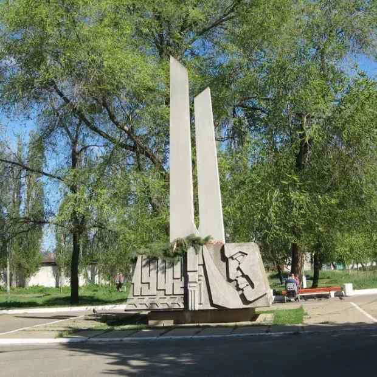

Памятный знак Комсомольцам-добровольцам
Памятный знак Комсомольцам-добровольцам, ушедшим на защиту Сталинграда. Более 2200 комсомольцев, юношей и девушек со всей области, откликнулись на призыв Сталинградского обкома комсомола и 17 ноября 1942 года дали клятву отстоять Сталинград и изгнать врагов с русской земли. 125 комсомольцев-добровольцев из Камышина и района. В основном, это были школьники 16 и 17 лет. Тридцать лет спустя парк, где произошло это событие, получил название Комсомольцев-добровольцев. А спустя два года комсомольцы Камышина собрали средства, на которые в парке установили памятный знак.